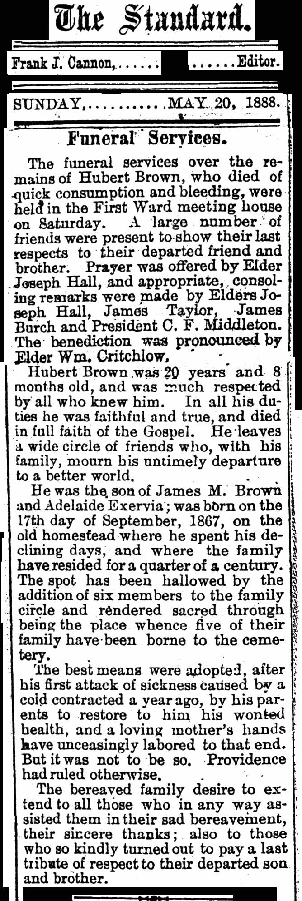

James Morehead Brown was born the fifth son of Captain James Brown and Martha Stephens Brown in Versailles, Brown County, Illinois, seventy miles from Nauvoo, on November 17, 1834.
When James Morehead was seven years old his parents were converted to Mormonism by Jacob Foutz. After one sermon Captain Brown was converted and went to Nauvoo to see the Prophet Joseph Smith who advised him to settle his business in Brown County and move to Nauvoo. Consequently, Captain Brown and family moved to Nauvoo and lived there two years. They then moved to Augusta, a small town on the Skunk River where he purchased a grist mill. There was no organized branch of the Church there and no strong opposition to it but the people were down on the Brown's and the other few members of the Church who lived there.
When the news of Joseph Smith's murder was made known it caused a great sensation in Augusta and even the unfriendly neighbors of the Brown's were shocked. When Brigham Young later decided to lead the people across the plains, the Brown family left Augusta and sailed down the Mississippi River to Winter Quarters to make ready for the eventful journey by them into the wilderness.
When the United States officers appeared and made an appeal for volunteers to fight in the Mexican War in 1846, Captain Brown was among the first to volunteer and he was accompanied by his two sons, Alexander and Jesse, and his new wife, Mary McRee Black Brown, and her little six year old son, George David Black. His son, thirteen year old, James Morehead Brown, stayed with the family and with them made the trek across the plains [with the Company], arriving in what is now Ogden, Utah in 1848. At that time there were very few houses in Ogden except the ones at Goodyear Fort [Fort Buenaventura], where his father had recently settled. James Morehead said the place was all sagebrush, grass, and willows. Bears were plentiful and troublesome. One night they killed four sheep and a dog. Foxes, wolves, and Indians infested the place. There were plenty of praire chickens to eat which were a welcome additon to their fare. Also sage hens and geese.
Bones of buffalo were plentiful. Generally speaking the Indians and the white people got along very well until they saw the land was productive. Then the Indians asserted their ownership and began to help themselves to the growning corn. An Indian was killed by mistake when someone fired a gun to frighten them away and this caused great trouble and Captain Brown sent to Salt Lake for help and a body of men came on horseback and drove the Indians from the settlement.
James Morehead said his first impression of Ogden was that it was the most forbidding place he had ever seen. One of the women in the company said she would rather go a thousand miles further and risk finding a better settlement.
The first home in Ogden outside of the Goodyear Fort was built by James's father, Captain Brown and Datus Ensign.
When Johnson's Army approached the valley men were sent out to meet them and keep them from coming down to Salt Lake. One of the methods used was to climb the mountains and collect a quantity of big rocks where they could be rolled down upon anyone passing along the canyon.
When the army later was stationed at Camp Floyd one of President Young's sons had a contract for supplying the army with wood which James Morehead helped to fill. He said the soldiers expressed themselves as having been fooled by the authorites in Washington about the state of affairs in Utah.
James Morehead Brown's missionary experiences began when he was sent on a mission to the Indians at Fort Supply and in Malad Valley, which was successful. He was always active in church work and became a High Priest and was a High Counsellor in the Weber Stake and a block teacher for many years, retiring only on account of deafness. He was a member of the Ogden Police Force for twelve years.
He became acquainted with Brigham Young in 1846 and esteemed him as a leader of the highest rank. He also was acquainted with the other Church leaders.
James Morehead Brown especially admired Daniel H. Wells, who was a wealthy land owner in Nauvoo, but was not a member of the Church at the time, but later joined and left Nauvoo with President Young, and later becme his counsellor in the First Presidency.
When James M. Brown went on his mission to Fort Supply in Wyoming as a missionary to the Indians, he met a beautiful half-breed Indian girl who had been reared in the home of Brigham Young [a photo of Zina Young is signed "To our dear Adelaide"]. Her mother, a full-blooded Shoshoni Indian had married a French fur trader named Batiste Exervia [Exervid]. Adelaide was their first child.
SALLY'S STORY....
Click here to read: Marilyn Ruth BrownColvin of Ogden, Utah - Story of Sally of the Shoshoni and her daughter Adelaide Exervia Brown.
Early in the 19th century a terrific battle took place at Battle Creek, Wyoming, practically all of the Indians were killed. As the white men wer leaving the field of battle they saw an Indian baby sucking its dead mothers breast. One of the men took the baby home with him and named her Sally [Sally of the Shoshones "Dain Apua" - People NimiNiwi]. Later Sally was taken to St. Louis and adopted by a merchant with whom she lived several years. Learning that she was a native of the far west, she longed to join her own people. When she was only a young girl she ran away and began her search for her native tribe.
Sally wandered for many days and experienced untold harrowing difficulties. She swam one of the tributaries of the Mississippi River before she reached the western ranges. Finally she found the Shone Indians, her own tribe and settled with them at the Fort Laramie Reservation in Wyoming.
Sally later married the French frontiersman, Batiste Exervia (1812-1843), and traveled with him over much of the western country. Sally bore her husband two children, John [1840] and Adelaide [1838]. A few years later her husband died of the spotted fever [John C. Fremont's Journal states Batiste "Xervia" was shot in the back at a Rendezvous July 4, 1843 by Thomas Fallon] . After his death Sally met the Mormon pioneers and turned little Adelaide over to Brigham Young who took her into his home to teach her the Christian religion and the ways of the white man. Unusually keen and intelligent, Adelaide learned to do fine sewing and in an artistic way made many beautiful quilts of flower design in beautiful colors, and she became a good cook and housekeeper. After Batiste died, Sally remarried to a frontiersman named Elijah Barney Ward (1813-1865 from Richmond, Virginia), by whom she had two daughters: Mary PollyWard [married Mr. Donnelly] and Louisa Jane Ward.
Adelaide Exervia went to Fort Supply/Laramie to visit her mother Sally Exervia Ward and her two half-sisters, Mary Polly Ward born July 15, 1847 and Louisa Jane Ward born May 26, 1848. Adelaide was a beautiful girl, slender with sparkling black eyes and black curly hair. At this time a celebration was going on in Fort Laramie and while it was in progress young Adelaide had perched herself on the top rail of the corral, swinging her bare legs.
In 1855 James Morehead Brown filled a mission among the Indians at Fort Supply in the Utah Territory (now Uinta County,Wyoming). This young, nineteen year old missionary, spotted Adelaide there and inquired who she was and immediatley said, :"That is the girl I am going to marry!" Twenty days later they were married and made their home in Ogden. When James saw her they fell in love with each other and they were soon married by his cousin James Stephens Brown. When his mission was finished, James and his young bride went to Ogden and made their home there in the same location on Washington Boulevard between 28th and 29th Streets. Here they reared a family of seven sons and three daughters. To help her husband, Adelaide kept boarders for many years.
James was ordained a Seventy in 1853 and later ordained a High Priest.
This cabin was built by James Morehead Brown upon his return from Fort Supply Mission in 1857. He and Adelaide lived in it until their house was finished. This cabin remained on their property and was used by Indians when they came to stay. It was moved in 1920 to Layton, Utah for use by their grandchild, Vida Adams.
Photo courtesy of Ron Hill
James Morehead Brown and Adelaide Exervia Brown's children:
1-- James William Brown - June 22, 1856
2-- Moroni Franklin Brown - Sep 23, 1857; md. Elizabeth Weaver Nov 29, 1883
3-- Phoebe Adelaide Brown - May 14, 1859;md. John Comstock Shaubut c. 1879
4-- Nephi Francis Brown - Sept 23, 1860; Jane Stephens Feb 19, 1902; d. Feb 1912
5-- Francis Adora Brown - Feb 26, 1862; md. Dolly McFerson on July 21, 1891
6-- Adelbert Brown - Feb 27, 1864: d. June 11, 1883 at Ogden, Weber, Utah.
7-- Albert Brown - Nov 17, 1865; md. Rachel Ann Brown (dau James Harvey Brown)
8-- Hubert Brown - Sep 17, 1867: d. May 17, 1888
9-- Lewis Herbert Brown - Nov 10, 1869; d. August 5, 1870
10--Martha Zina Brown - June 7, 1872; d. February 20, 1880
11--Nancy Viola Brown -Jan 10, 1876; d. September 11, 1893
Home of James and Adelaide Brown at 2843 Washington Avenue in Ogden, Weber, Utah
Photo courtsey of Albert Brown Clark.
Adelaide's death on 15 December 1895 at age 57 was reportedly from tuberculosis. Four of their children died before age 21, at least two of them are thought to also have died from tuberculosis.


Right Click mouse on image - then click on view image - to see enlarged photo

Seven years later, James Morehead Brown married Matilde "Tillie" Hornsby on October 8, 1902, she is the daughter of Samuel Hornsby and Elizabeth Lucas Hornsby, both from England. Matilde was born on November 26, 1865 in Neath, Glamorganshire, South Wales. Tillie had two sisters born and died before her birth, Ruth Hornsby 1857-1859, and Isabella Hornsby 1860-1864. It is believed Tillie had no children. Tillie and James raised a niece.
James Morehead Brown and Matilda "Tillie" Hornsby
Photo courtesy of Ruth Hill Toller.
Matilda "Tillie" Hornsby Brown and James Morehead Brown c. 1920
Photo taken by Frances "Fannie" Leona Brown Clark, Albert Brown Clark's mother.
Photo courtesy of Albert Brown Clark and Joan Henefer Clark.
Right Click mouse on image - then click on view image - to see enlarged photo
James labored as a missionary among the Indians at Fort Supply, Wyoming and in Malad, Idaho. He acted as a ward teacher for many years, and served about forty-two years as a member of the Weber Stake High Council, being the senior member of that body for some time. He was a carpenter by trade, but followed farming successfully. He served as a policeman in Ogden for many years and filled other responsible positions. Elder Brown was released from the High Council in 1906 on account of poor hearing.
James died the 26th day of December 1924 at ninety years of age.
|
SATURDAY EVENING
|
DEATH TAKES
J. M. BROWN
Ogden's Oldest Resident Will Be Buried Monday
Funeral services for James Morehead Brown, declared to have been the oldest resident of Ogden, will be held Monday afternoon at 1 o'clock In the Eleventh ward chapel, with Bishop James H. Riley presiding.Interment will be in the Ogden City cemetery under the direction of Lindquist Undertakers.
Mr. Brown, who died Friday evening at his home. 2843 Washlngton Avenue, was the only surviving son of Captain James Brown, founder of Ogden.
SMALL EARLY PRICE
Mr. Brown was born in Brown county, Illinois, November 17, 1834, and came to Utah in September 1848. His father, Captain Brown, who acquired that title as a member of the Mormon Battalion, acquired the tract of land between Weber canyon and Hot Springs under a Spanish grant held by Miles Goodyear, old-time trapper. The purchase was made by Captain Brown with money he drew from the army and, the consideration for this section, now worth several millions of dollars, was approximately $3000. Following the purchase of this tract the Brown family occupied a fort formerly held by Goodyear on the Weber river at a point between Twenty-eighth street and Twenty-ninth-street, which becameknown as Brown's fort. Captain Brown died- from an accident in 1863.
ON POLICE FORCE
Mr. J.M. Brown was a carpenter by trade, helping his father build many of the first homes in the city. He served on the city police force for 12 years, his service being under the administration of Lorin Farr and Lester J. Harrick, early mayors of Ogden. He was never conspicuous in public affairs but had a reputation for honesty and industry .He was member of the high council of Weber stake and served the L. D. S. church on two missions to the Indians. One was to Fort Sully, near Fort Bridger in Wyoming in 1855 and 1856 and the other a few years later to the Indians in Malad valley.
TWICE MARRIED
Mr. Brown was married to Adelaide Exervid on July 24, 1855, and eleven children were born to them, of which only one, the oldest daughter, Mrs.Phoebe Shaubut of Deer Lodge. Montana is living. Among the children was the late Bishop Moroni F. Brown of the First ward. After Mrs. Brown's death Mr. Brown married Matilda Hornsby on October 8, 1902 who survives. He leaves twenty- three grandchildren and two great-grandchildren.
The body may can viewed at the home on Sunday and on Monday until time of services.
|
Right Click mouse on image - then click on view image - to see enlarged photo
|
OBITUARY
ONLY SURVIVING
SON OF FOUNDER
OF OGDEN DIES
OGDEN. Dec 27 --Special-- James Morehead Brown, 90, only surviving son of Capt. James Brown, founder of Ogden, died Friday evening at the home, 2843 Washington Avenue. He had been in failing health for sometime.
Mr. Brown was born in Brown County, Illinois, Nov. 17, 1834, and came to Utah in Sept. 1848. His father, Captain Brown, who acquired that title as a member of the Mormon battalion, acquired the tract of land between Weber canyuon and Hot Springs under a Spanish grant held by Miles Goodyear, old-time trapper. The purchase was made by Captain Brown with money he drew from the army, and the consideration for this section, now worth several millions of dollars, was approximately $3,000.
The Brown family occupied a fort formerly held by Goodyear on the Weber river at a point between Twenty-eighth street and Twenty-ninth street, which became known as Brown's fort. Captain Brown died from an accident in 1862.
A carpenter by trade he helped his father build many of the first homes in the city. He served on the city police force for 12 years, his service being under the administration of Lorin Farr and Lester J. Herrick, early mayors of Ogen. Never conspicuous in public affairs he had a reputation for honesty and industry. He was for years a member of the high council of Weber stake and served on two missions to the Indians. One to Fort Sully, near Fort Bridger, in Wyoming. In 1855 and 1856, and the other a few years later in Malad valley.
Mr. Brown married Adelaide Exeravid, July 24, 1855, and 11 children were born to them, of whom only one, the oldest daughter, Mrs. Phoebe Shaubut, Deer Lodge, Mont., is living. Among the Children wa the lat Bishop Moroni F. Brown of the First ward. After Mrs. Brown's death Mr. Brown married, in 1902, Matilda Hornsby, who survives, also 23 grandchildren and two great-grandchildren.
Funeral services will be held Mondy, Dec. 29 at 1 p.m. in the Eleventh ward chapel with Bishop James H. Riley presiding.
Deseret News 1924
|
James Morehead Brown Gravestone
Photo courtesy of Albert Brown Clark
Children of James Morehead Brown and Adelaide Exervia Brown
Double photo Courtesy of Albert and Joan Clark
1
James William Brown
Born: 22 June 1856
Unmarried/ played violin, horn, and accordion
Died: 25 Sep 1883

|
2
Born: 23 Sep 1857
md: Elizabeth "Lizzie"Weaver
29 Nov 1883
Died: 12 Sep 1897
|
3
Born: 14 May 1859
md: John Comstock Shaubutt
c. 1879
Died: 28 Jan 1942
|
4
Born: 23 Sep 1860
md: Celestia Jane Stephens
19 Feb 1881
Died: 9 Feb 1912
|
5

Born: 25 February 1862
md: (1) Emily Ann Weaver (2) Dolly McPherson
21 July 1891
Died: 27 June 1902
|
6
Adelbert Brown
Born: 27 February 1864
Teenager
Died: 11 June 1883
|
7
Born: 17 November 1865
md: Rachel Ann Brown
18 Jan 1899
Died: 23 December 1915
|
8
Hubert Brown
Born: 17 September 1867
20 years old
Died: 17 May 1888
|
9
Louis Herbert Brown
Born: 10 November 1869
Infant
Died: 5 August 1870
|
10
Martha Zina Brown
Born: 7 June 1872
Child
Died: 20 Feb 1880
|
|
11
Born: 10 January 1876
Teenager
Died: 11 September 1893
|

|
Sources:
PAF - Archer files = Captain James Brown + (1) Martha Stephens > James Morehead Brown
PAF - Archer files = Captain James Brown + (7) Phoebe Abigail Abbott > Orson Pratt Brown
Brown Book of Remembrance written by Hattie Critchlow Jensen and Loella Brown Tanner priot to 1948.
Pioneers and Prominent Men of Utah - 1847, Page 68 and 69.
"Autobiographical Encyclopedia" by Andrew Jensen. Page 242.
"Ogden's "Horrible Tragedy": The Lynching of George Segal", Utah Historical Quarterly, Spring 1981, Vol. 49, No. 2, Page 157-172. by Larry R. Gerlach. (see file; to be added)
Photocopies of James Morehead Brown's children from Albert and Joan Clark.
Click here to read: Marilyn Ruth BrownColvin of Ogden, Utah - Story of Sally of the Shoshoni and her daughter Adelaide Exervia Brown.
[Bracketed], bold, photos, corrections, and additional information added by Lucy Brown Archer.
Copyright 2001 www.orsonprattbrown.com
|
{kind=link}